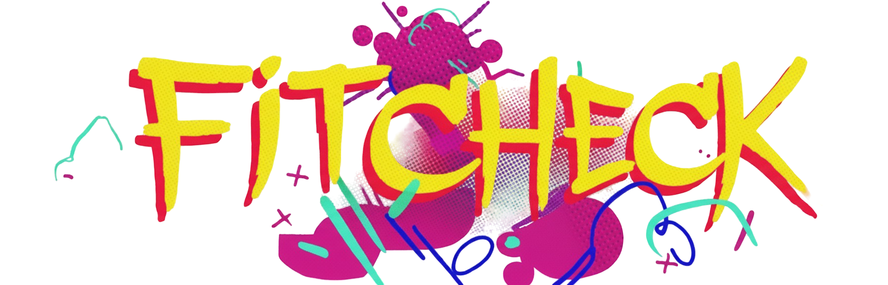
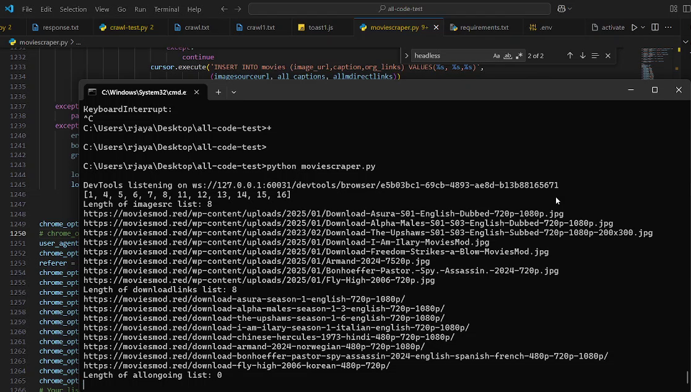
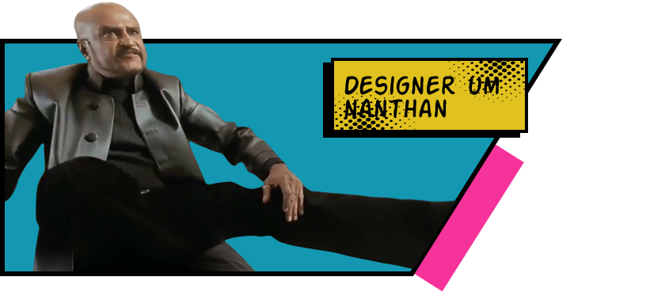

i build things i wish had existed.
chennai, tamilnadu, india.
view résumébroad across the bar. deep down the stem.
end-to-end llm finetuning for java vulnerability detection — qwen2.5-coder hit 80.39% accuracy on 102 eval cases, beating my own 14b run.
view on github
view model on huggingface
fastapi control plane that pools multiple kaggle accounts, shards large gpu jobs across them, and monitors 12-hour sessions with telegram alerts.
view on github

outfit recommender that runs fashionclip entirely in your browser and builds looks from the wardrobe you already own.
view on github

distributed selenium scraper for a high-churn website — auto resolves rotated domains, multiprocess workers with retry/backoff, mysql dedup state, docker compose + telegram alerts.
view on github
filling google forms was repetitive, so i built a bookmarklet that fuzzy-matches fields and autofills them — even defeating react's controlled-input tracking.
view landing page
telegram bot that walks ad-walled shorteners with headless chrome, caches resolved links in postgres and ships an admin approval workflow.
view on github
no projects found in this category... yet!
